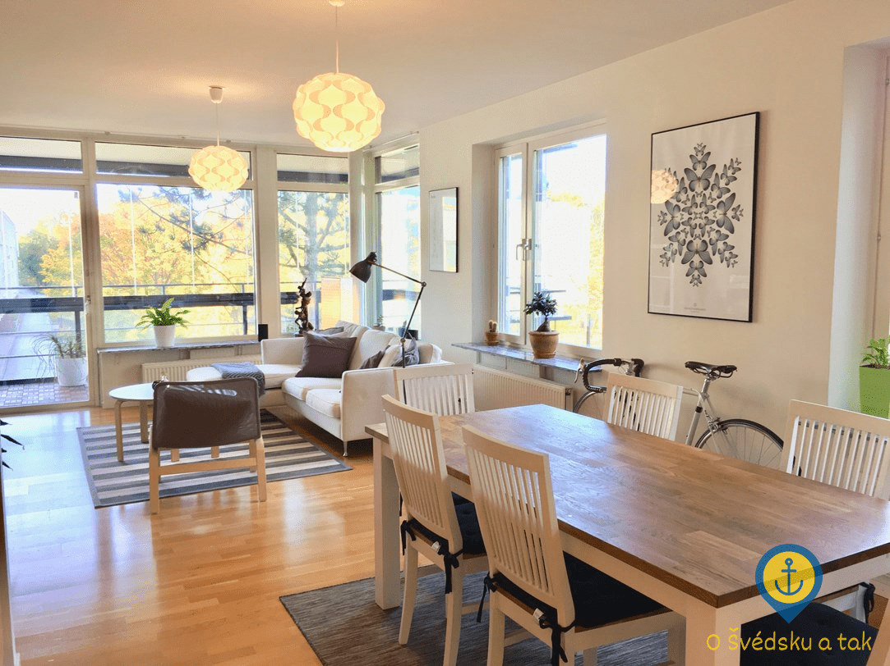
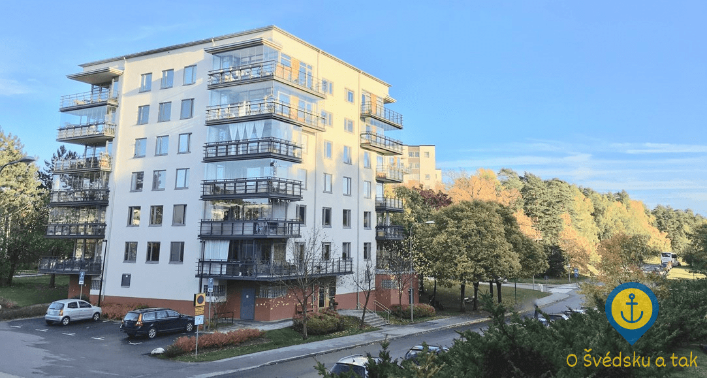
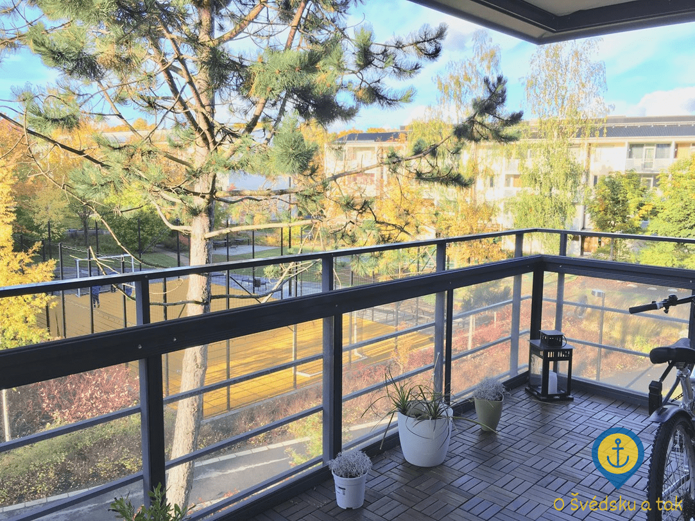
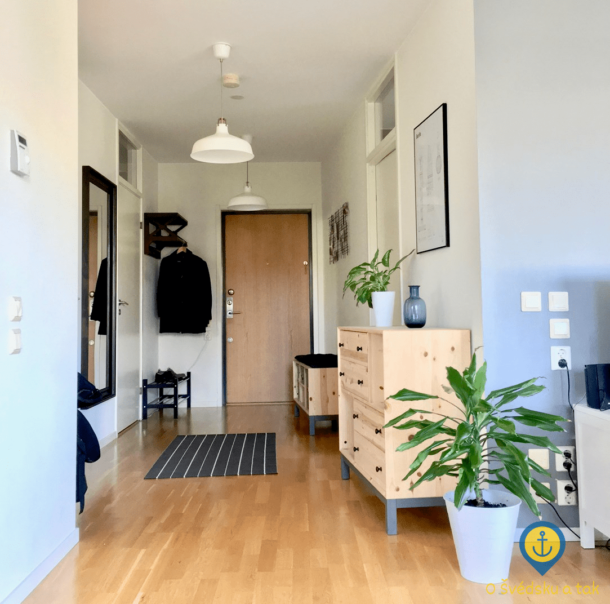
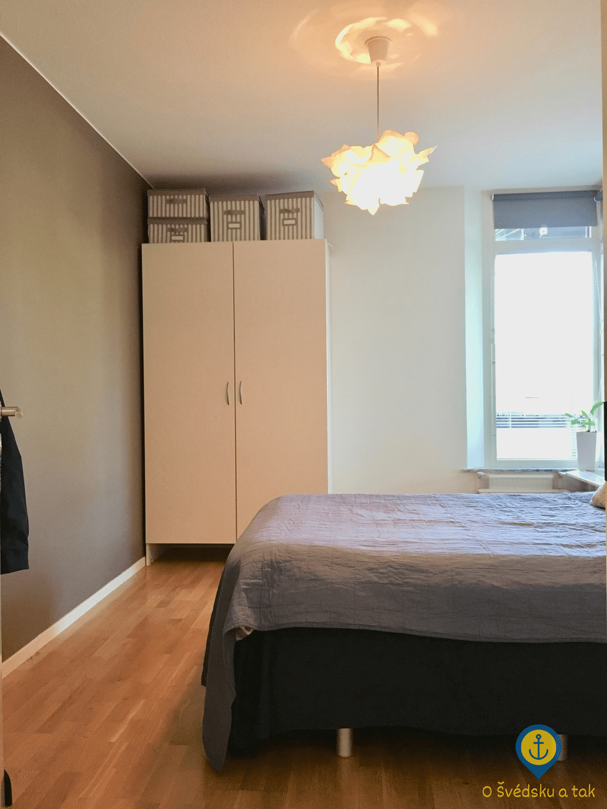
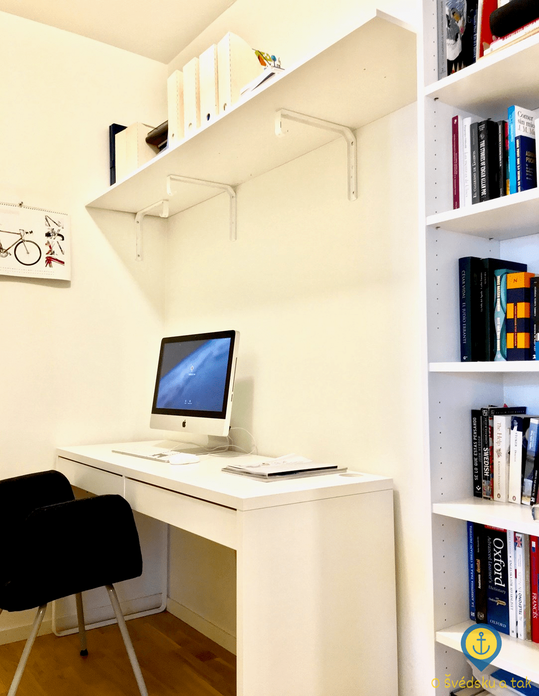
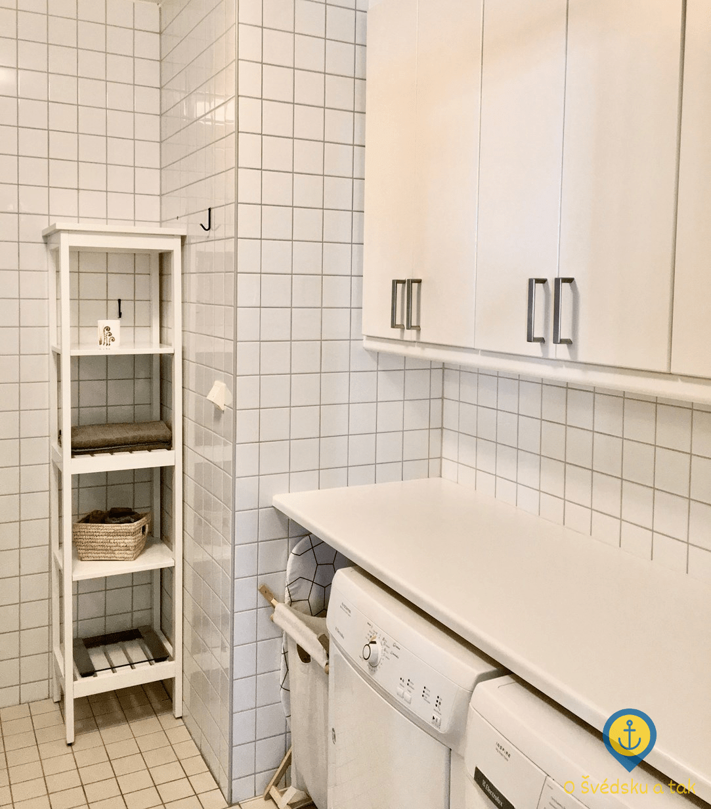
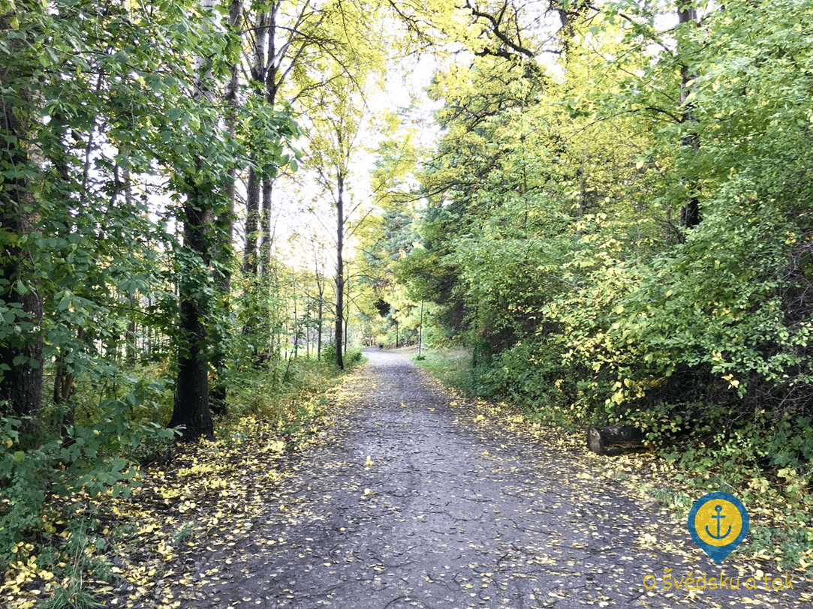
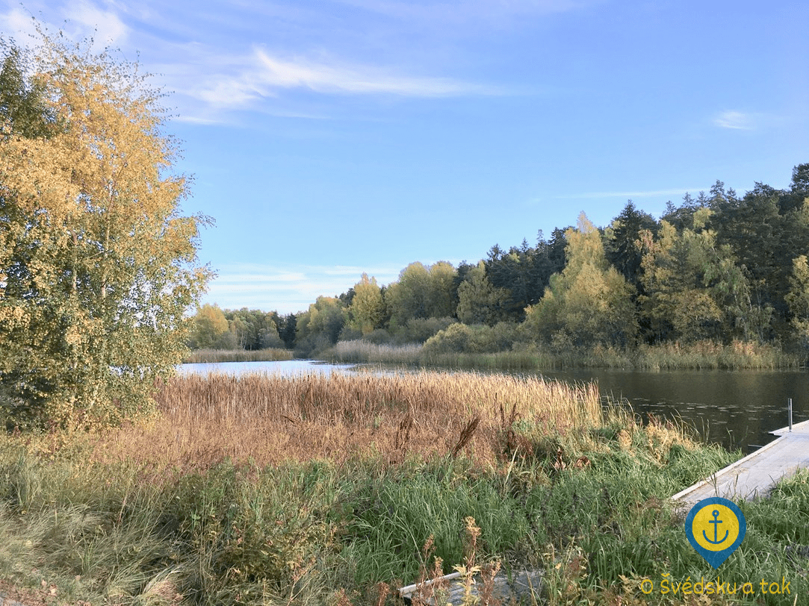

Pohádka o tom, kterak jsme k nové adrese přišli
Publikováno 7. 11. 2017 (9:51) v kategorii Odjezd z ČR • Autor Knut Holm • Přečtete za 6 minut
Když vezmu v úvahu všechny ty zvěsti o tom, jak je ve Stockholmu složité najít byt, navíc na dálku a když jsou vašimi spolubydlícími kočky, tak je to opravdu pohádka. Od začátku až do konce.
Než začneme hledat
O tom, jak jsme si najali relokační agenturu (dále RA), jsem psal poměrně nedávno. Tehdy mě ohledně hledání nového bytu provázela akorát víra, že se svěřujeme do rukou profesionálů a že snad budeme mít od ledna kde bydlet. Nedělal jsem si moc velké iluze o tom, že si budeme mít z čeho vybírat, přesto s námi RA prošla naše požadavky, které jsme si nakonec stanovili na tyto:
- preferujeme bydlení na okraji města blízko přírody před bydlením v centru
- dojezdová vzdálenost do centra by pomocí MHD neměla činit více, než jednu hodinu jízdy
- chceme ideálně 3+kk, v tom horším případě 2+kk (pozn. ve Švédsku se počet pokojů počítá na ložnice podobně jako v UK, uvádím zde pro srozumitelnost české ekvivalenty)
- chceme bydlet s našimi dvěma kocoury
- preferujeme nevybavený byt (přestože kocouři nejsou moc velcí raubíři, občas prostě přes nábytek přeběhnou, zatrhnou drápem čalounění a pro všechny zúčastněné strany je lepší, když se toto nestane na nábytku cizím)
- musí být možné parkování v rozumné vzdálenosti od domu za poplatek maximálně 1 000 SEK
- cenový strop 14 000 SEK (ve Švédsku jsou energie levné a většina z nich už je v nájmu navíc zahrnuta, včetně vysokorychlostního připojení k internetu)
- stěhovat se chceme v lednu, jsme ochotní zaplatit maximálně jeden měsíc navíc
- kauce ve výši maximálně dvou nájmů
RA se netvářila, že bychom toho chtěli moc, vlastně přijala docela s povděkem, že pro jednou nechtějí její klienti bydlet co nejvíce v centru. Kanceláře navíc v centru mám, takže nám bylo úplně jedno, na které straně města budeme bydlet (pozn. partnerka je učitelka a školy jsou všude). To byla obrovská výhoda. Obrovská nevýhoda samozřejmě bylo to, že máme kočky, což ale aspoň trochu vyvažovala skutečnost, že chceme nevybavený byt.
Abychom zvýšili svoje šance, RA nám poradila, jak zaujmout majitele bytů a získat tak důležitou výhodu oproti ostatním zájemcům. Byly jim k dispozici tyto dokumenty:
- mé potvrzení o práci ve Stockholmu s doloženým příjmem (vyžádal jsem si jej v práci, obdržel jsem jej bez problémů)
- doporučení od stávající majitelky bytu, ve kterém bydlíme (to bylo skutečně pravé, v angličtině, poprosili jsme o něj majitelku - dokládá mimo jiné důležitý fakt, že jsme nikdy nezaplatili pozdě nájem)
- krátká prezentace v PDF o nás a našich kocourech včetně fotek (její vytvoření nám doporučila RA a poradila, na co se v ní mámě zaměřit)
Kostky byly vrženy, RA se mohla pustit do práce a my mohli jen čekat. Asi nemusím zdůrazňovat, že jsme byli jako na trní a každý den, kdy jsme nedostali žádnou nabídku, byl obrovským zklamáním.
První vlaštovky
První nabídka přišla na začátku posledního týdne v říjnu. Jednalo se o byt v novostavbě v oblasti Bromma. Se spotřebiči, bez nábytku, 2+kk, čtvrté patro, parkování, venkovní bazén, za 14 000 SEK, na rok s možností prodloužení, kousek do metra. Naprostá paráda! Majitel ale sháněl nájemníky už od listopadu a platit dva měsíce navíc pro nás bylo moc. Přestože se RA snažila majitele obměkčit, bylo to bez šance.
Druhá nabídka přišla asi o týden později, přesněji minulý čtvrtek. Opět novostavba, tentokrát trochu dál, v oblasti Vällingby. Se spotřebiči, bez nábytku, 3+kk, druhé patro, lodžie, parkování, za 13 000 SEK, na rok s možností prodloužení, kousek od metra. Majitel navíc hledá nájemníky až od ledna a požaduje kauci pouze ve výši jednoho nájmu! Poskočí nám srdce a okamžitě máme zájem o prohlídku.
 Nový byt - obývací pokoj
Jistě nemusím zdůrazňovat, že na trhu s nemovitostmi jde především o čas. Ještě před samotným hledáním bytů nás RA upozornila, že pokud budeme trvat na osobní prohlídce, pravděpodobně nám byt někdo vyfoukne a do Stockholmu poletíme naprosto zbytečně. Druhou možností je prohlídka přes Skype (Švédi jsou na svůj produkt náležitě hrdí, nezkoušejte proto navrhovat jiného klienta), kdy jde zástupce RA do požadovaného bytu spolu s majitelem a prohlídku vám zprostředkuje virtuálně. Můžete se na cokoliv zeptat, cokoliv vám ukážou a můžete si „prohlédnout“ i okolí, které je ale dobré ještě před potvrzením prohlídky nastudovat z Google Street View.
 Nový byt - pohled na dům
Ve čtvrtek nemohou majitelé, v pátek a v sobotu jsme pryč my a přestože projevujeme snahu si i přesto čas nějak vyhradit, nakonec se domlouváme na neděli krátce před polednem.
Na prohlídce bytu přes Skype
Před samotnou prohlídkou jsme jako na trní. Okolí už známe zpaměti, všechno se nám hrozně líbí, fotky bytu jsou nádherné a nechápeme, co by se muselo stát, abychom z naší strany byt odmítli. Ve smluvený čas nám zvoní Skype a prohlídka začíná.
 Nový byt - kuchyně
Nový byt - kuchyně
 Nový byt - lodžie
Naše relokační agentka nám nejprve představuje majitele, což je mladý pár zhruba v našem věku, příjemný a velmi sympatický. Naše domněnka je, že chtějí založit rodinu, tak se stěhují do většího. Poté začíná samotná prohlídka. Z fotek jsme nevykoukali akorát půdorys, takže nás zajímá, kde jsou vchody do kterých pokojů, také chceme vidět okna a lodžii. Zjišťujeme, že lodžie je velice prostorná a navíc zasklená! Padá nám čelist, protože to mimo jiné znamená, že se tam bez problémů můžou chodit vyvalovat kocouři.
 Nový byt - chodba
 Nový byt - ložnice
 Nový byt - pracovna
Dále se bavíme o nábytku. Zjišťujeme, že nám zůstanou veškeré spotřebiče, což znamená obrovskou lednici, mrazák, troubu, sporák, mikrovlnku, myčku, pračku a sušičku. Dále v ložnici zůstane velká šatní skříň, což nám nevadí, tu kocouři nezlikvidují. Zbytek nábytku si majitelé odvezou.
 Nový byt - koupelna
Nový byt - koupelna
 Nový byt - spotřebiče v koupelně
K bytu dále patří privátní sklep a můžeme využívat obrovskou místnost na jízdní kola. Parkování je možné před domem na ulici zdarma, v zimních měsících je akorát třeba každý čtvrtek přeparkovat na vedlejší ulici kvůli odklízení sněhu. Jako alternativu je možné si pronajmout parkovací stání. V domě je výtah.
 Nový byt - cesta do přírodní rezervace
Po prohlídce se dále bavíme s majiteli o okolí. Usoudíme, že majitelé evidentně viděli naši prezentaci, protože nám začínají nadšeně popisovat, že kousek od domu je yacht klub, kam bychom mohli umístit naši plachetnici, vedle domu je obrovská přírodní rezervace, kde se nachází jízdárna, dále je tam možné chodit na procházky, jezdit na kole, v zimě běžkovat. Také je vedle domu jezero, kde se dá v létě koupat a v zimě bruslit. Město dokonce kontroluje tloušťku ledu kvůli bezpečnosti.
 Nový byt - příroda v okolí
Na metro je to 3 minuty pěšky, každých 10 minut odjíždí přímá linka do centra. Do práce to mám 25 minut metrem taktéž bez přestupů a potom 2 minuty pěšky. 10 minut pěšky od domu se nachází obrovské nákupní centrum, poliklinika a množství restaurací. Nejbližší IKEA je 16 minut autem.
Kromě toho získáváme dojem, že jsme majitelům sympatičtí také a máme z celé prohlídky naprosto úžasný pocit. O byt stojíme ještě víc, než před prohlídkou.
Přestože nám relokační expertka vysvětlila, že se nemusíme rozhodnout hned, my už jsme rozhodnutí byli. 5 minut po skončení prohlídky píšeme e-mail, že to bereme a trneme, jestli si nás vyberou i majitelé.
Šťastný konec
Druhý den kolem poledne přichází ten nejkrásnější e-mail, který jsme mohli dostat! Majitelé si nás vybrali a chtějí sepsat nájemní smlouvu. Chce se mi brečet štěstím a nemůžu uvěřit tomu, jaké jsme měli štěstí. Máme byt! Máme naprosto úžasný byt v naprosto úžasné lokalitě, za skvělých podmínek a za skvělé peníze! O něčem takovém se nám ani nesnilo. Spadl z nás obrovský stres a jsem rád, že tu nejdůležitější otázku ohledně stěhování máme vyřešenou už na začátku listopadu.
Když jsem psal minule, že doufám, že nebudeme litovat jediné koruny, kterou jsme do RA dali, tak už teď jsem si jistý tím, že nebudeme. Jsou to profesionálové na svém místě a já jsem nepopsatelně vděčný, že jsme si objednali jejich služby. Bez nich bychom se totiž k takovému bytu, a to říkám naprosto bez nadsázky, nikdy nedostali.
Tak nějak končí pohádka o tom, kterak jsme k nové adrese přišli. Na ni však plynule navazuje pohádka o tom, kterak jsme si stěhování do cizí země užívat začali, ale o tom zas někdy příště :-)